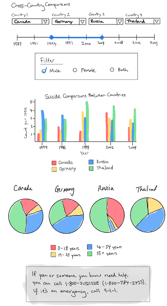

Dash suicideWatch Dashboard
dashboard
data_science
education
dash
plotly
The
suicideWatch Dash app provides visualizations and statistics on the number of suicides and suicide rates for different age groups and genders in various countries.This Dash application is a little cuisine of our bigger Shiny application build upon the same data set.
Summary

The suicideWatch Dash app provides visualizations and statistics on the number of suicides and suicide rates for different age groups and genders in various countries. The app is primarily targeted towards researchers, policymakers, mental health professionals, and anyone interested in exploring and analyzing suicide rates with interactive capabilities that allow them to study the trends to find measures to mitigate the detrimental effects of such phenomena.